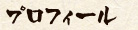
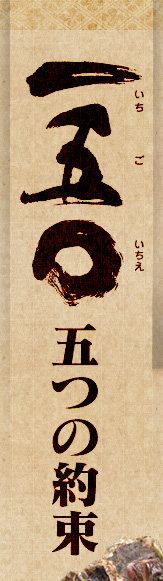
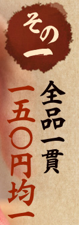
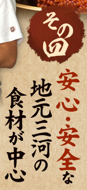
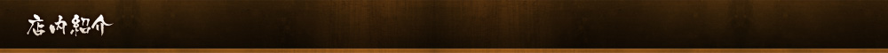
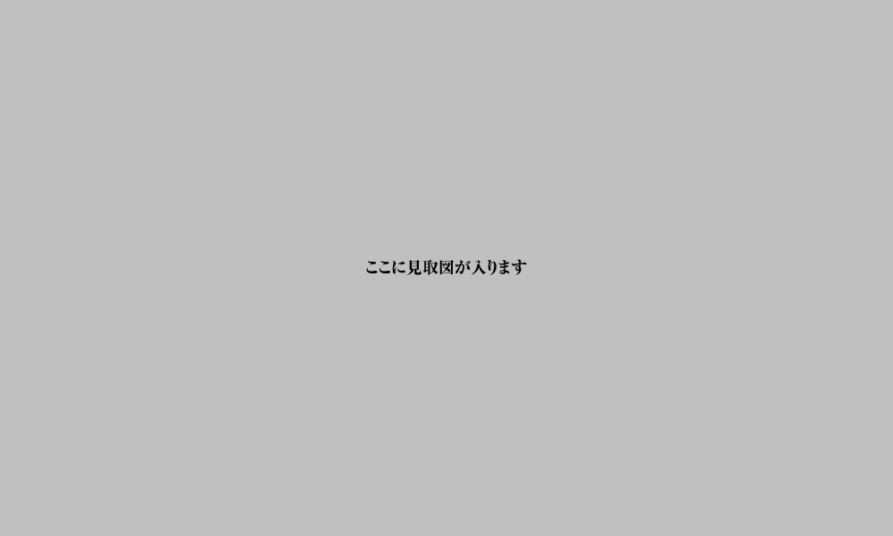
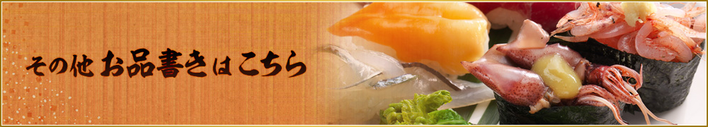

「 一五○（いちごいちえ）」は、お客様に「安心して」「本物のお寿司」を「気軽」に味わっていただきたいという想いだけで、不可能を可能にした全品一五〇円均一のタチ寿司が出来ました。
そして「一期一会」は、一生で一度だけの機会という意。どのお客様へもこの出逢いは一生に一度のものと心得て、出会いを大切に今できる最高のおもてなしで、お客様お一人おひとりをお迎えいたします。
「 一五○（いちごいちえ）」は、本物の技・味・おもてなしで皆様をお待ちしております。


堀 佑二郎
| 年齢 | 25歳 |
|---|---|
| 出身地 | 名古屋市守山区 |
| 経歴 | 守山区の「すし処 友佑」の次男として生まれる 子供の頃から親の手伝いをしながら 寿司の基本を自然に身につける 寿司部の石川板長の右腕として若くして活躍 |


「一五〇(いちごいちえ)」は大トロ・ウニ・ボタン海老などいわゆる高級ネタが全て一貫一五〇円均一というタチ寿司の常識では考えられないような価格で提供しようというお店です。
※ご注文は二貫三〇〇円(税込)からとなります。
※高級ネタはお一人様一回限りのご注文でお願いします。
をコンセプトにより多くの皆さまに、職人が握った本当のお寿司の良さを味わっていただくのが我々寿司業界の使命と思い、この「一五〇(いちごいちえ)」の出店を決意いたしました。
- ①圧倒的な「商品力」
- ②圧倒的な「技術力」
- ③圧倒的な「鮮度力」
ただ安く売るだけでは私達「みどり」がやる意味がありません。お客様に職人が握った本物のお寿司を「安心して」「気軽に」味わっていただく「タチ寿司の入門店」になることが一番の目的です。

信頼できる地元の業者さんより仕入れた、安心・安全な食材を使用しています。
今までカウンターで食べたことがないお客様でも、どれでも一貫一五〇円(税込)なので安心。「一五〇(いちごいちえ)」はこの地元のお客様にいつまでも愛され続ける「なくてはならないお寿司屋さん」を目指しています。
※お会計は現金のみでお願いいたします。







にぎり鮨「一五〇（いちごいちえ）」
〒447-0878 愛知県碧南市松本町184 T.kappaビル2F（地図）
TEL.0566-42-1150（お電話の際は「ホームページを見た」とお伝えくださるとスムーズです）
営業時間：11：00～14：00/17：00～21：00 / 定休日：月曜日